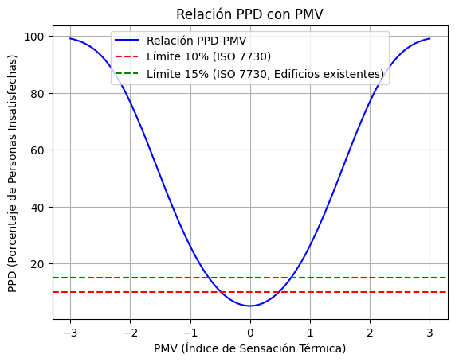

2 Antecedentes
En este capitulo se presentan los antecedentes de este proyecto. Los estudios de confort térmico realizados en México. Se indaga más a profundidad los modelos predictivos, la evaluación de confort térmico a través de encuestas y los estudios para generar nuevos modelos de confort térmico
2.1 Confort térmico
Como se mencionó previamente en el capitulo anterior el confort térmico se define como una condición mental que expresa la satisfacción con el ambiente, y es un juicio cognitivo influenciado por procesos físicos, fisiológicos y otros factores (American Society of Heating, Refrigerating and Air-Conditioning Engineers, Inc. 2017) y es de suma importancia en el diseño de las edificaciones sustentables.
2.1.1 Confort térmico en México
En cuanto a investigación sobre confort térmico en México existen diversos estudios, tal es el caso del estudio realizado por Rincón-Martínez y Int (2019), donde se empleó la metodología del enfoque predictivo para estudiar el confort térmico en un grupo de estudiante en un laboratorio con ambiente controlado. Se realizaron pruebas experimentales con el propósito de calcular la temperatura neutra y los intervalos de confort térmico durante los periodos térmicos extremos de frío (enero) y calor (mayo). Llegaron a la conclusión de que los estudios de laboratorio son capaces de simular de manera adecuada las condiciones ambientales.
Otro caso de estudio realizado por Cetz y Azpeitia (2018) consistió en una muestra de 255 participantes donde midieron parámetros ambientales como la temperatura del aire, la temperatura radiante media y la velocidad del viento, obteniendo como resultado las temperaturas preferidas y aceptables en aulas con ventilación natural y aire acondicionado.
Por otro lado, el estudio de May-Tzuc et al. (2023) evaluó la viabilidad del modelo de confort térmico adaptativo en condiciones de clima cálido subhúmedo. Utilizaron dos modelos adaptativos, uno basado en la norma ASHRAE 55-2020 y otro de índole regional para la tipología climática tropical de México. Analizaron trece locaciones en el estado de Campeche. El estudio se centró en el ahorro energético en refrigeración. Mostraron que ambos modelos redujeron el uso de climatización, logrando un ahorro energético y una mejora del confort térmico.
Oropeza-Perez, Petzold-Rodriguez, y Bonilla-Lopez (2017) llevaron a cabo encuestas a 74 estudiantes voluntarios de la Universidad de las Americas Puebla (UDLAP) cuyas ciudades de origen están distribuidas en cuatro distintas regiones bioclimáticas de México. Llevaron a cabo las encuestas durante sus periodos vacacionales en invierno y verano, tanto en casas con sistemas de aire acondicionado como en casas sin ellos. Desarrollaron propuestas modelos de confort térmico adaptativos para las cuatro regiones. Sus resultados muestran que las personas en regiones áridas prefieren temperaturas interiores más altas en la temporada de frío y son capaces soportar temperaturas interiores más altas en la temporada de calor.
Martínez et al. (2020) se centraron en Ensenada, Baja California, analizando variables ambientales simultáneamente con la aplicación de cuestionarios para evaluar la temperatura del aire seco, la humedad relativa y la velocidad del viento, proporcionando así, una comprensión detallada del confort térmico en esta región.
Becerra-Santacruz y Lawrence (2016) llevaron a cabo un estudio a gran escala con aproximadamente 1800 participantes con la finalidad de comprender las condiciones térmicas en diferentes tipologías de viviendas, en él, se evaluaron variables como la temperatura del aire, la temperatura de globo negro, la velocidad del viento y la humedad relativa.
López-Pérez, Flores-Prieto, y Ríos-Rojas (2019) analizaron la percepción de confort térmico de los ocupantes en modo de aire acondicionado y ventilación natural en la región de Tuxtla Gutiérrez, Chiapas, para ello, se evaluaron la temperatura del aire, la temperatura del globo, la humedad relativa y la velocidad del aire.
Zepeda-Gil y Natarajan (2022) hicieron estudios de confort térmico en viviendas con ventilación natural en la zona urbana de Toluca con temperaturas invernales frías. Recopilaron datos ambientales y de ocupación, aplicaron encuestas bimestrales y se aplicaron los modelos de confort térmico adaptativo y el PMV. Los resultados destacan que solo el 42% de las horas de ocupación cumplían con los estándares de confort térmico, disminuyendo al 22% en invierno.
2.2 Evaluación de confort térmico a través de encuestas
ISO 10551 (ISO, 2019) proporciona una guía sobre cómo construir escalas subjetivas. Los cinco tipos principales de escalas se pueden dividir en dos categorías: escalas utilizadas para el estado personal y escalas para describir el entorno físico. Las tres primeras escalas (perceptual, evaluativa y percepción) son para el estado personal y las dos últimas (aceptabilidad y satisfacción) son para el entorno físico. La aceptabilidad personal y la escala de satisfacción dan información de la opinión de los ocupantes sobre su entorno. Estas dos escalas deben aplicarse siempre después de los tres estados personales. Los principales tipos de escalas y el orden que sugieren aplicar en los cuestionarios son
La ISO 10551 (2019) establece escalas de juicio subjetivo para evaluar el entorno físico, con el objetivo de garantizar que los espacios sean diseñados teniendo en cuenta al usuario. La norma aborda cinco tipos principales de escalas, divididos en dos categorías: escalas para el estado personal y escalas para describir el entorno físico. Las escalas para el estado personal son tres: perceptual, evaluativa y percepción. Mientras que para el entorno físico son dos: aceptabilidad y satisfacción.
Aguirre (2021) presenta las escalas de la siguiente manera:
2.2.1 Escalas para el estado personal
Escala de percepción del estado personal (¿Cómo te sientes ahora?): Se utiliza para comprender la percepción subjetiva del estado personal en un entorno específico. La escala puede ser unipolar o bipolar. Si es unipolar, se utiliza una graduación de 4 grados, que puede extenderse a 5 grados. El punto de origen se establece en 0, con grados de intensidad 1, 2, 3, (4). Si es bipolar, se utiliza una graduación de 7 grados, ampliables a 9 grados. El punto de indiferencia también es 0, pero esta escala tiene un polo A y un polo B. Los grados negativos de intensidad son -1, -2, -3, -4, siendo -4 el más cercano al polo A y -1 el más cercano a 0. Los grados positivos de intensidad son 1, 2, 3, 4, siendo 4 el más cercano al polo B y 1 el más cercano a 0. El 0 representa la ausencia de sensación en ambas escalas.
Escala evaluativa (¿Cómo te encuentras?): Evalúa el nivel de comodidad en un entorno. Es una escala unipolar de 4 grados ampliable a 5. El 0 representa comodidad y el polo representa la incomodidad extrema.
Escala de preferencia (¿Cómo preferirías estar?): Utiliza una escala bipolar simétrica con 7 grados para medir la preferencia de las personas respecto a ciertos aspectos del entorno. El 0 representa “sin cambio” en la preferencia.
2.2.2 Escalas para describir el entorno físico
Aceptabilidad: Esta escala se centra en la aceptabilidad a nivel personal del entorno. Tiene dos grados, se acepta o se rechaza.
Satisfacción: Se centra en la tolerancia al entorno. Es una escala de 5 grados. 0 es perfectamente tolerable, mientras que el polo es intolerable.
En las tablas 2.1 y 2.2 se observan las estructuras para las escalas unipolares y bipolares
| Punto de origen | Grados de intensidad | |
|---|---|---|
| 0 | 1,2,3,(4) | Unipolar |
| Grados de intensidad | Punto de indiferencia | Grados de intensidad | ||
|---|---|---|---|---|
| Polo A | (-4),-3,-2,-1 | 0 | 1,2,3,(4) | Polo B |
2.3 Modelos predictivos de confort térmico
Para evaluar el confort térmico en edificaciones, se recurre a diversos modelos predictivos que se adaptan a condiciones específicas. Estos pueden dividirse en dos categorías: los modelos para edificaciones con sistemas de aire acondicionado y los modelos para edificaciones sin aire acondicionado.
2.3.1 Modelos para edificaciones con sistemas de aire acondicionado
2.3.1.1 PMV
El Voto Medio Previsto o PMV por sus siglas en inglés está en función de las siete variables físicas que afectan al confort térmico: temperatura, humedad relativa y velocidad del aire, temperatura radiante, presión atmosférica, nivel metabólico del ocupante y nivel de aislamiento térmico de la ropa. Dispone de una escala de sensación térmica de 7 puntos, donde -3 indica una sensación de mucho frío, 0 representa una sensación neutra y +3 representa una sensación de mucho calor. Este es un modelo pensado para edificaciones que cuenten con sistemas de aire acondicionado y está incluido en el ASHRAE55 (2017).
Agregar ecuación del PMV
2.3.1.2 PMV-PPD
También conocido como el método de Fanger, es el modelo más utilizado y se basa en la combinación del PMV explicado previamente con el Porcentaje Previsto de Insatisfacción, o PPD por sus siglas en inglés. El PPD predice el porcentaje de personas insatisfechas en un ambiente en función del PMV. Este modelo fue propuesto por Fanger (1970). El PPD se calcula de la siguiente manera:
\[ PPD = 100 - 95 \cdot \exp\left(-0.03353 \cdot \text{PMV}^4 - 0.2179 \cdot \text{PMV}^2\right) \]
El ASHRAE55 indica que el PPD no debe ser mayor al 10%, mientras que la ISO 7730 (2005) indica un valor menor al 10% para edificios nuevos y 15% para edificios ya existentes. En la Figura 2.1 observamos la relación entre el PMV y el PPD.

2.3.2 Modelos para edificaciones sin sistemas de aire acondicionado
Existen dos tipos: los adaptativos y los no adaptativos
2.3.2.1 Adaptativos
ePMV
es una extensión del PMV, tal como su nombre lo indica Extended Predicted Mean Vote, fue propuesto por Fanger y Toftum (2002). Uno de los problemas al aplicar el PMV en ambientes sin aire acondicionado es que se sobrestima el voto de sensación térmica de calor en condiciones de clima cálido.
PMVe (Fanger y Toftum 2002): Es una modificación al PMV. Se observó que el PMV sobrestima el voto de sensación térmica de las personas en edificios sin aire acondicionado en climas cálidos, es por esto que se hizo una modificación al PMV. Proponen un factor de expectativa (e) el cual está influenciado por la duración del clima cálido a lo largo del año y por la presencia de otros edificios en la región con sistemas de aire acondicionado.
En la Tabla 2.3 se observan los valores de e para los distintos casos.
| Período Cálido | Edificios Cercanos con Aire Acondicionado | Valor (e) |
|---|---|---|
| Todo el año | No | 0.5 |
| Todo el año | Sí | 0.7 |
| Verano | No | 0.7-0.8 |
| Verano | Sí | 0.8-0.9 |
| Período corto en verano | - | 0.9-1 |
Para el calculo del ePMV además de calcular el valor de e, se debe considerar el valor del estado metabólico del ocupante (MET). usualmente el MET se evalúa mediante cuestionarios que determinan el tiempo dedicado a actividades específicas como estar sentado, de pie o caminando. Sin embargo, esto no considera el comportamiento natural de las personas que al sentir calor tienden a reducir su actividad de manera inconsciente para adaptarse al clima, disminuyendo así su tasa metabólica. La solución propuesta para el ePMV es considerar esta reducción en la tasa metabólica en ambientes cálidos. Se considera una disminución del 6.7%.
De esta manera, para calcular el ePMV se deben seguir los siguientes pasos:
- Calcular el PMV
- Se calcula la nueva tasa metabólica de la siguiente manera: \[M_{mod} = (0.067PMV)M\]
Donde \(M_{mod}\) es la tasa metabólica modificada y \(M\) es la tasa metabólica estimada para el PMV.
- Se vuelve a obtener el valor del PMV utilizando \(M_{mod}\)
- Se multiplica el nuevo valor del PMV por el factor e
aPMV
Adaptative Predicted Mean Vote, es una adaptación del PMV y fue propuesta por Yao, Li, y Liu (2009). Es un modelo que toma en cuenta la sobrestimación del PMV de los ocupantes en edificios sin aire acondicionado. Se propone un coeficiente adaptativo \(\lambda\), el cual se obtiene realizando encuestas de sensación térmica a los ocupantes del edificio, y en caso de que el edificio aún se encuentre en construcción, se busca un edificio con características similares. El aPMV se calcula de la siguiente manera:
\[ \text{aPMV} = \frac{\text{PMV}}{1 + \lambda \text{PMV}} \]
2.3.2.2 No adaptativos
Índice Humidex Ontario
Propuesto por Masterton, Richardson, y atmosphérique (1979). Representa en un solo valor cómo la temperatura y la humedad del aire afectan la sensación térmica. Utiliza datos recopilados en una encuesta a una muestra representativa de personas. Es un modelo exclusivo para climas cálidos. Se calcula de la siguiente manera:
\[ Humidex = T + h \] \[ h = \frac{5}{9}(p_v- 10) \]
Donde \(T\) es la temperatura de bulbo seco en ◦C. \(h\) es el factor de humedad, tambén en ◦C. \(p_v\) es la presión de vapor en mbar.
Índice Humidex Colima
Es la misma ecuación que el Índice Humidex Ontario pero realizado con encuestas en la ciudad de Colima. Modifica la relación con la sensación térmica e incluye época de frío. (Gómez-Azpetia, Gómez, y Peña 2006)
2.4 Estudios para generar modelos predictivos de confort térmico con mediciones de variables fisiológicas del ocupante
Otro análisis importante es explorar e identificar que variables fisiológicas influyen en la evaluación del confort térmico. Indagando en la bibliografía, se encontraron estudios como el de S. Y. Sim et al. (2016) donde toman mediciones de la temperatura de la piel en 4 puntos (parte superior de la muñeca, arteria radial, arteria ulnar y punta del dedo índice), se menciona que por cuestiones de ergonomía y practicidad descartan la temperatura del dedo índice y tras la comparación de relación entre las temperaturas medidas y las encuestas de sensación térmica, obtuvieron que al combinar las 3 mediciones de la muñeca se obtenían mejores resultados con una mayor correlación Pearson (0.81) respecto a los votos de sensación térmica. Sin embargo, no representa una diferencia tan grande respecto a las correlaciones de los puntos individuales. Los resultados de las mediciones en la parte superior de la muñeca, como en la arteria radial son iguales (0.76), y deducen que la medición más conveniente es en la parte superior de la muñeca.
Bogatu et al. (2023) explican que existen diferentes variables que pueden servir como indicadores de confort térmico. En el estudio utilizan la temperatura en la parte superior de la muñeca y la frecuencia cardíaca, debido a que reportan que en estudios previos resultaron ser buenos indicadores, sobre todo el análisis de su variabilidad, reportan que la medición de la temperatura de la piel es comúnmente utilizada por su facilidad de ser capturada y porque puede ser de mucha utilidad, mientras que indicadores como la sudoración no resultan tan favorables por la dificultad que implica hacer la medición. Otro registro de variables es el caso de Liu et al. (2019), quienes midieron diferentes variables en un ambiente controlado, tales como: temperatura del aire, humedad relativa, velocidad del aire, temperatura en la superficie del asiento, frecuencia cardíaca, temperatura de la piel (en el tobillo y en la muñeca) y la temperatura del aire cercana al tobillo. Encontrando que la temperatura de la piel medida en el tobillo es más predictiva que la medida en la muñeca. Algo que resaltar es la forma en la que lograron hacer que los participantes validaran la información obtenida, ya que incentivaron económicamente a los participantes para hacer más largo el experimento y responder más encuestas.
Chaudhuri et al. (2018) realizaron un experimento con 20 participantes, 10 hombres y 10 mujeres, durante dos meses realizaron encuestas de confort térmico y midieron: temperatura del aire, humedad relativa, velocidad del aire, temperatura de globo, temperatura de la piel, conductancia de la piel, frecuencia cardíaca, saturación de oxígeno en la sangre y presión arterial, registrando que la medición de la temperatura de la piel la realizaron en la parte posterior de la mano por el fácil acceso a las arterias radial y ulnar y en la mano no dominante.
El estudio de Choi y Yeom (2017) encontró que medir la temperatura de la piel en varios puntos (frente, brazo, cuello, parte superior de la muñeca, parte inferior de la muñeca, espalda) y aplicar algoritmos de árbol de decisiones para relacionar las temperaturas brinda mejores resultados al generar modelos de confort térmico combinando los temperaturas que usándolas de forma individual. El estudio concluye que el resultado óptimo lo obtiene de la combinación de la temperatura de la piel en la cintura, la temperatura de la piel en el brazo y la tasa de cambio de la temperatura de la piel de la parte interior de la muñeca.
Estudios como el de Ziyang Wang, Matsuhashi, y Onodera (2022) proponen un nuevo enfoque para evaluar el confort térmico en tiempo real utilizando la variabilidad de la frecuencia cardíaca. Se demuestra que, al combinar diferentes características de la frecuencia cardíaca, se puede predecir de manera precisa el confort térmico personal.
Respecto a los modelos y métodos utilizados se tiene el caso de Omidvar y Kim (2023), donde proponen un modelo matemático que utiliza la temperatura de la piel, la frecuencia cardíaca y la temperatura del aire para predecir las sensaciones térmicas individuales. Dicho modelo se basa en la teoría fisiológica de que la percepción de la temperatura corporal está influenciada por la temperatura del aire y la temperatura de la piel que a su vez está influenciada por la tasa metabólica y la circulación de la sangre.
Otros estudios implementan algoritmos de aprendizaje automático para analizar los resultados y hacer modelos de predicción de confort térmico, como el caso de@Mansi2022, el cual monitorea señales fisiológicas como el electrocardiograma, el electroencefalograma y la actividad electrodérmica para evaluar el confort térmico en distintas condiciones. Utilizaron sensores portátiles (Empatica E4 e Interaxon MUSE). En sus resultados indican un aumento en las densidades de espectro de potencia (PSD) en las bandas alfa y theta. Por el contrario, en disconfort existe una disminución en las ondas beta y gamma.
Otro caso de implementación de Machine Learning es el reportado por Chaudhuri et al. (2020), en el que presentan un método mejorado de predicción del índice de estado térmico (TSI) personal, llamado método ePTS, para predecir el confort térmico de los ocupantes de edificios. El método utiliza la temperatura de la piel de la mano, la frecuencia cardíaca (pulso) y la temperatura ambiente para predecir el TSI, para ellos, utilizan la plataforma e-Health sensor.
2.5 Desarrollo de dispositivos
El término “wearable” viene del idioma inglés y se puede traducir como “vestible”, por ello, cuando se habla de dispositivos wearables se hace referencia a objetos como relojes, pulseras, auriculares, gafas, zapatillas, llaveros o cualquier otro accesorio o prenda de vestir que se lleve encima y que permita realizar alguna tarea adicional al usuario sin estorbar en su cotidianidad, mientras que, al mismo tiempo, el dispositivo puede proveer de datos de interés, como: estado de salud, rutinas, lugares, noticias, datos climatológicos, etc. Por esta razón, el uso de wearables para monitoreo del confort térmico resulta conveniente, ya que permite llevar un monitoreo constante sin ser invasivo para el usuario. Existen estudios donde se ha reportado el uso de wearables con dicho fin, tal es el caso de J. K. Sim, Yoon, y Cho (2018) quienes desarrollaron un dispositivo wearable para medir la tasa de sudor de la piel a través de una cámara de humedad y sensores de humedad, ya que mencionan que el estado térmico humano puede ser medido a través del sudor. Feng et al. (2023) desarrollaron una base de datos y una interfaz para ver los datos medidos en tiempo real y planean implementar un control de HVAC (sistema de calefacción, ventilación y aire acondicionado por sus siglas en inglés) a través de su dispositivo de manera automática. El estudio se realizó solo en dos personas y desarrollaron modelos de confort térmico personalizados donde midieron variables como: la temperatura del aire, la humedad relativa, el nivel de luz, la frecuencia cardíaca, la conductancia eléctrica de la piel, la temperatura de la piel y la actividad basada en el movimiento. Otro experimento es el desarrollado por Ghahramani et al. (2018) en el que se monitorearon 231 participantes durante tres días seguidos en un entorno controlado de oficina. Midieron variables como: sonido, CO2, intensidad lumínica, temperatura del aire, humedad relativa y presión atmosférica. Los resultados obtenidos muestran que la tecnología de detección ambiental puede ser una herramienta valiosa para mejorar la eficiencia energética de los edificios y mejorar la comodidad de los ocupantes. Garces et al. (2021) implementaron dispositivos de bajo costo que permitieron la medición de la calidad del aire y confort térmico en edificaciones. Emplearon los índices PMV y PPD para evaluar la percepción de confort. Midieron con cada nodo sensor la temperatura del aire, la humedad relativa, la velocidad del aire, y la temperatura radiante media, comparando los resultados de las mediciones con un dispositivo Testo 480. Los resultados obtenidos muestran que es posible determinar el confort térmico midiendo la temperatura y la humedad.
Haciendo uso de wearables comerciales, Nazarian et al. (2021) emplean el wearable Fitbit y hacen experimentación tanto en una cámara controlada, como en un ambiente exterior no controlado. Encontraron que la temperatura corporal puede ser predicha utilizando la frecuencia cardíaca, la temperatura de la piel y la temperatura del aire en la muñeca. Tartarini et al. (2022), haciendo uso también un Fitbit con sensores Ibutton y la aplicación Cozie para la implementación de encuestas de confort térmico, en el que implementaron un método que ellos llamaron micro-EMA para recopilar datos durante periodos prolongados de tiempo, concluyen que un experimento muy prolongado que involucre encuestas de confort térmico puede volverse tedioso y pesado para los usuarios. Hasan, Alsaleem, y Rafaie (2016) determinaron que la tasa metabólica y la ropa tienen un gran impacto en el modelo PMV, pero son difíciles de medir, por lo que con el uso de un Fitbit estimaron la tasa metabólica a través del acelerómetro del dispositivo. En cuanto al uso de sensores, Cho et al. (2023) reportan que hacer uso de 3 sensores de temperatura logra conseguir una mejor precisión que utilizar tan solo 1. Esto lo deciden tomando como base el artículo “Estimation of Thermal Sensation Based on Wrist Skin Temperatures” de S. Y. Sim et al. (2016), Los sensores utilizados son termistores montados sobre una banda elástica y maleable asemejando una pulsera de monitoreo. El artículo de Gnecco, Pigliautile, y Pisello (2023) presenta una nueva metodología para investigar la correlación entre el Voto de Sensación Térmica (TSV) diario de los individuos y la exposición ambiental. El objetivo es desarrollar modelos de confort personalizados maximizando el bienestar de los ocupantes y minimizando el consumo de energía. Durante el desarrollo del proyecto, se capacitó a los usuarios para utilizar los sensores iButton por sí mismos, facilitando la implementación de las encuestas de confort térmico y el estudio en sí. Malakhatka et al. (2021) presenta un proyecto que almacena datos de gasto energético en una base de datos. Se apoyaron del dispositivo OURA Ring para monitorear el sueño de los usuarios y desarrollaron un modelo de red neuronal para mejorar la calidad del sueño. En conjunto, los datos recopilados y el modelo ofrecen buenos resultados para evaluar y mejorar la calidad del sueño de los usuarios. Otro mecanismo reportado por Zhe Wang et al. (2020) consiste en un dispositivo que aplica ondas de enfriamiento o calentamiento en la muñeca que ha demostrado un efecto correctivo de hasta 2.5 °C en 3 minutos. Usan el wearable para ayudar a mejorar el confort térmico utilizando ondas de calor o frío para estimular los receptores de temperatura de la piel.